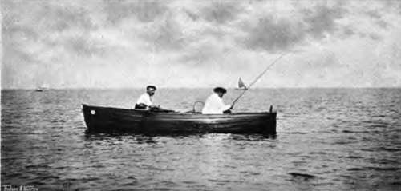
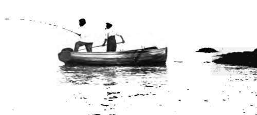

Mackerel Fishing. Part 3
Description
This section is from the book "Fishing", by Horace G. Hutchinson. Also available from Amazon: Fishing.
Mackerel Fishing. Part 3
Now, it will at once occur to the reader, particularly if he is an Irishman, that it may be necessary to catch your mackerel before you cut artistic baits out of the side of its tail. The " float" lasts so well, as already stated, that it is generally possible, in the height of the season, to catch the first mackerel with the dried-up baits of the days before, which a very little towing through the water restores to their first freshness. It may, however, very well happen earlier in the season that there are not even old " floats " available. In such a case, it is necessary to catch mackerel number one with some form of artificial bait. A large yellow-bodied " fly" with white wings and a little silver tinsel, such as supplied by Hearder, of Plymouth, and any other maker of sea-tackle, or one of the little tin spinners so familiar in the tackle shops, now that the sport of sea-fishing has compelled attention to its requirements, will answer the purpose admirably.
Once, however, the mackerel is caught, do not let reluctance to maim it tempt you to continue fishing with the artificial bait. However excellent such lures may be for the pollack of some localities, they are only second best, and a late second at that, for mackerel, and it is false economy not to change to the natural bait at the first opportunity. The hypercritical say that one side of the fish-the left, I think it is-gives a better " float" than the other, but when you find your boatman taking this line, especially if he knows that he will have the bulk of the fish to sell, do not believe him entirely, even though the air be salty, for his object is to prevent the fish being disfigured on both sides, such fish fetching a lower market price at most ports.1
64.- In Full Swing
67.- Well Into Him
Once the angler has put together his tackle, baited his hook, and paid out line, a good deal of what follows depends on the boatman, or on the convenient and inexpensive friend who takes his place in the bow. The first thing is to find the mackerel. For this there is no rule, but the experienced fisherman keeps a watchful eye on the movements of the gulls and other sea-fowl that prey on moving shoals. It is not, as a rule, the mackerel themselves on which the birds are intent, for they would prove too large and too active for anything but a gannet or cormorant to tackle. The mackerel, however, are themselves desperate characters, attacking the young rocklings and sand-eels and other surface-swimming fry, harrying their shoals and leaping among them open-mouthed in a manner that cannot fail to attract rival fish-eaters from overhead. Just as in the desert I have seen a single vulture drop from the " deep-domed empyrean" on a fallen camel, and thereby hail its watching comrades to the banquet, so the swopping, crying gulls point the way to the uncertain fisherman, and their tell-tale flight is a safe guide to a good catch* Once the shoal is found it should be no difficult matter, even in a rowing-boat, to catch a score of fish. Let the oarsman pull his hardest-for pollack, on the other hand, bid him go his slowest, and he will not refuse-and keep a ready hand on the winch. The moment the double tug of a mackerel is felt, raise the rod top. Never strike sharply, as the fresh-water fisherman strikes, when using a pliant rod from a moving boat at sea, for if by chance the biting fish should be a pollack, never out of the question when trailing baits for mackerel, the sudden extra strain would be likely, not so much to part the gear, but, what is infinitely more distressing, to snap the top joint. By gently raising the top, however, as if in firm protest against the flippant dancing at the other end, the fish will be securely hooked in nine cases out of ten. In the tenth case it is better to lose your fish than to break your rod. When the mackerel is fairly on the hook, it is as well to get it to the boat as soon as possible. With larger fish, such as bass and pollack, the sportsman legitimately gets as much play as possible out of them before bringing the proceedings to a close, but the majority of English mackerel are not sufficiently heavy to give very much play when the boat is under way. If only one rod is in use it is as well to let your man rest on his oars while you are bringing each fish to the boat, not merely to take the added strain off the light rod, but also to bring the fish in as quickly as possible and without creating a panic among the rest. When, however, more than one bait is out, this stopping for each fish may be the reverse of expedient, for, in the first place, the other bait may, in comparatively shallow water, go to the bottom as soon as the way is off the boat, and there get involved in differences with sharp rocks or clinging weed fronds, and, in the second place, the second bait, dragging through the water, is often successful in keeping the mackerel together in the wake of the boat. The mackerel, then, is reeled in as swiftly as possible, some little law being allowed to unusually large fish, and it will be seen that it sheers to right and left in narrowing circles as the line comes home. Small fish may be " hand-lined " out of the water, care being taken to choose a moment when the head of the fish points towards the boat, when a very slight jerk will lift it clear of the water and over the side. If, on the other hand, the angler is so incautious as to lift the fish at the moment when it is heading away from the boat, the parting of the fine gut will be a not improbable result. The strength of even a comparatively small mackerel in the water is almost incredible. Extra large fish, of a pound or more in weight, should be brought to the boat in a short-handled landing-net, as this will relieve the light tackle of a good deal of quite unnecessary and most damaging strain. The mackerel should not be allowed to fall in the bottom of the boat until the hook has been removed from its mouth. As a matter of fact, it should not be thrown in the bottom of the boat at all. A little attention to cleanliness and order, without spoiling the day's pleasure by anything approaching to fussiness, adds immeasurably to the comfort of such excursions. Let the mackerel, then, be caught deftly in the left hand and firmly grasped, while a single twist of the hook shank frees the point and barb from the throat of the fish. The back of the mackerel's head is then knocked smartly against the foot-rest or seat, and the dead fish is dropped in a box or basket placed handy for the purpose. The "float" is pushed back into position, on the bend of the hook, and the message of invitation goes back to the shoal that, it may be hoped, hangs around the boat with a friendly invitation to " drop them a line."
Continue to: